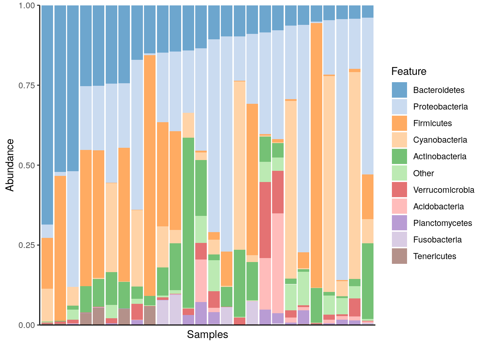
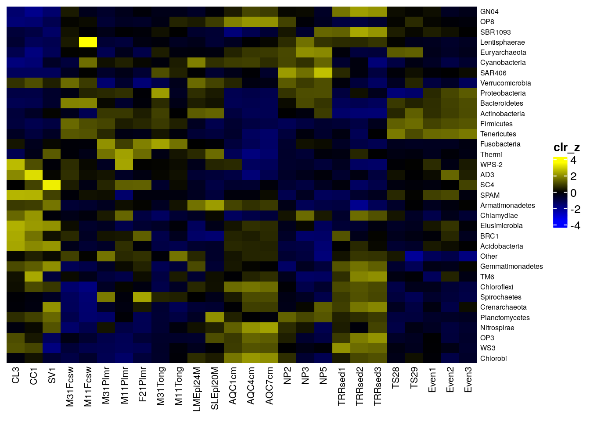
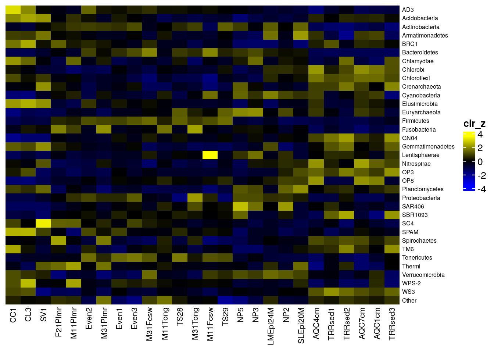

12 Community composition
12.1 Composition barplot
A typical way to visualize microbiome composition is by using a composition barplot which show relative abundance of selected taxa. In the following code chunk, relative abundance is calculated, and top taxa are retrieved for the phylum rank. Thereafter, the barplot is visualized ordering rank by abundance values and samples by “Bacteroidetes”:
library(miaViz)
data("GlobalPatterns")
tse <- GlobalPatterns
# Computing relative abundance
tse <- transformAssay(tse, assay.type = "counts", method = "relabundance")
# Getting top taxa on a Phylum level
tse <- agglomerateByRank(tse, rank ="Phylum")
top_taxa <- getTop(tse, top = 10, assay.type = "relabundance")
# Renaming the "Phylum" rank to keep only top taxa and the rest to "Other"
phylum_renamed <- lapply(rowData(tse)$Phylum, function(x){
if (x %in% top_taxa) {x} else {"Other"}
})
rowData(tse)$Phylum_sub <- as.character(phylum_renamed)
# Agglomerate the data based on specified taxa
tse_sub <- agglomerateByVariable(tse, by = "rows", f = "Phylum_sub")
# Visualizing the composition barplot, with samples order by "Bacteroidetes"
plotAbundance(
tse_sub, assay.type = "relabundance",
order.row.by = "abund", order.col.by = "Bacteroidetes")
12.2 Composition heatmap
Community composition can be visualized with heatmap, where the horizontal axis represents samples and the vertical axis the taxa. The color of each intersection point represents abundance of a taxon in a specific sample.
Here, abundances are first CLR (centered log-ratio) transformed to remove compositionality bias. Then standardize transformation is applied to CLR-transformed data. This shifts all taxa to zero mean and unit variance, allowing visual comparison between taxa that have different absolute abundance levels. After these rough visual exploration techniques, we can visualize the abundances at Phylum level.
tse <- GlobalPatterns
# Agglomerate to phylum level
tse <- agglomerateByPrevalence(tse, rank = "Phylum")
# Add clr-transformation on samples
tse <- transformAssay(
tse, assay.type = "counts", method = "relabundance", pseudocount = 1)
tse <- transformAssay(tse, assay.type = "relabundance", method = "clr")
# Add scale features (taxa)
tse <- transformAssay(
tse, assay.type = "clr", MARGIN = "rows", method = "standardize",
name = "clr_z")We can visualize heatmap with *sechm* package. It is a wrapper for ComplexHeatmap package (Gu 2022).
library(sechm)
# Plot heatMap with sechm
heatmap <- sechm(
tse, assayName = "clr_z", features=rownames(tse),
show_rownames = TRUE, show_colnames = TRUE,
row_names_gp = gpar(fontsize = 6), column_names_gp = gpar(fontsize = 8),
breaks = 1
)
heatmap
Another method to visualize community composition is by plotting a NeatMap, which means we use radial theta sorting when plotting the heatmap (Rajaram and Oono 2010). The getNeatOrder() function in the miaViz package allows us to achieve this. This method sorts data points based on their angular position in a 2D space, typically after an ordination technique such as PCA or NMDS has been applied.
The getNeatOrder() method calculates the angle (theta) for each point relative to the centroid and sorts data points based on these theta values in ascending order. This approach preserves the relationships between data points according to the ordination method’s spatial configuration, rather than relying on hierarchical clustering.
First, we will load the necessary libraries and load GlobalPatterns, which is a TreeSE object. We agglomerate the data to phylum level to explore the phyla community.
Now, we’ll create the NeatMap using the sechm package and the getNeatOrder() function.
library(scater)
library(sechm)
# Perform PCA on the dataset
tse <- runPCA(tse, ncomponents = 10, assay.type = "clr_z")
# Sort by radial theta using the first two principal components
sorted_order <- getNeatOrder(
reducedDim(tse, "PCA")[, c(1, 2)], centering = "mean")
tse <- tse[, sorted_order]
# Plot NeatMap with sechm
neatmap <- sechm(
tse, assayName = "clr_z", features=rownames(tse),
show_rownames = TRUE, show_colnames = TRUE,
do.scale=FALSE, cluster_rows=FALSE, sortRowsOn = NULL,
row_names_gp = gpar(fontsize = 6), column_names_gp = gpar(fontsize = 8),
breaks = 1
)
neatmap
In addition, there are also other packages that provide functions for more complex heatmaps, such as those provided by iheatmapr and ComplexHeatmap (Gu 2022). The utilization of *ComplexHeatmap* for clustered heatmaps is explained in chapter Section 15.3.